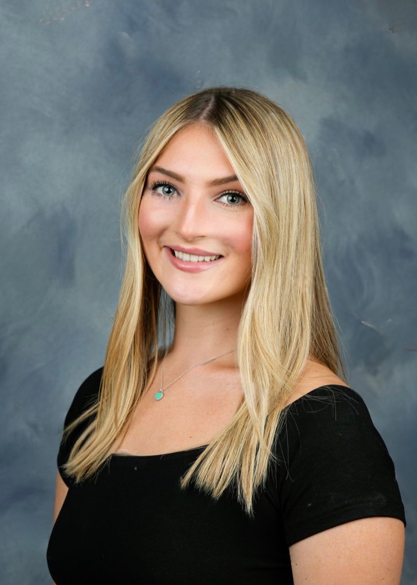

This is a profile picture for Kaitlyn Clements.
Kaitlyn is a second year student at the University of Kansas majoring in Computer Science and minoring in Business. She will be interning at Links Technology Solutions Summer of 2023, as an IT intern. Kaitlyn has experience with classes such as: Programming in python, embedded systems using C and C++, digital logic, discrete structures, software engineering, linear algebra, and much more. She is also involved in Alpha Chi Omega sorority, Natural Ties, Rock Chalk Review, and is a Supplemental Instructor for EECS 168/169 at the University of Kansas. Reach her at kclements@ku.edu .
Link to Links Technology Solutions